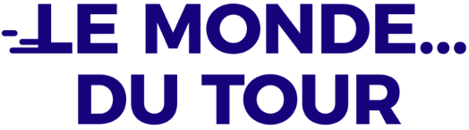
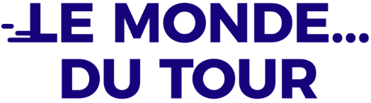
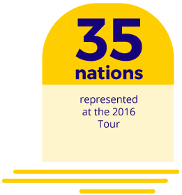
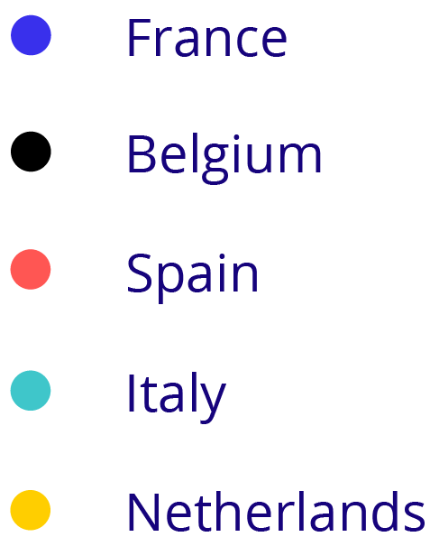

Timeline
Timeline

Timeline


Since 1903, 104 Tours de France have taken place with a total of 430,000 km cycled which is more than the distance between the Earth and the Moon. Race against the clock, yellow jersey, polka dot jersey, green or white, mythical mountains passes… These elements are the essential parts of this sporting event which will bring together 10 million spectators from all around the world in 2018.


Since the first edition, more and more nationalities has joined the Tour de France. The 104 editions have been disrupted by both World Wars but it was 50 nationalities which took part of the Tour de France since its creation.
The Tour de France is the third most watched sport event on television after the Football World Cup and the Summer Olympic Games.

The ultimate reward for a Tour de France’s rider: to put on the yellow jersey at the end of a stage. The holy grail to reach for is to wear it the longest time possible until the podium on the Champs-Elysée in Paris. Obviously, the Tour’s winner wears the famous yellow jersey, but other jerseys appeared later. Since 1933, the best climber is rewarded with a magnificent polka-dot jersey. In 1953, it was the green jersey which made its appearance for the best sprinter. Finally, it was in 1975 that the white jersey was created for the best young rider.
Which nationality will stand out and collect the most jerseys ?


Data collection: Claude Bouchet and Maïna Boutmin for France 3 Pays de la Loire.
Thanks to the A.S.O press department for race and historical data.